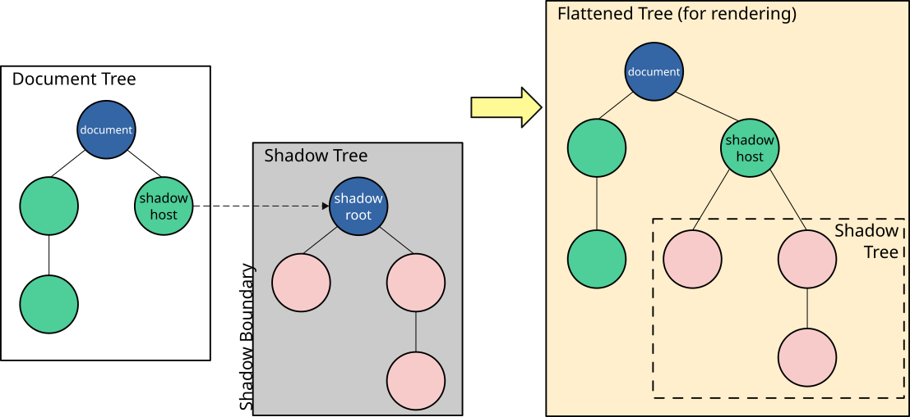

Using shadow DOM
An important aspect of custom elements is encapsulation, because a custom element, by definition, is a piece of reusable functionality: it might be dropped into any web page and be expected to work. So it's important that code running in the page should not be able to accidentally break a custom element by modifying its internal implementation. Shadow DOM enables you to attach a DOM tree to an element, and have the internals of this tree hidden from JavaScript and CSS running in the page.
This article covers the basics of using the shadow DOM.
High-level view
This article assumes you are already familiar with the concept of the DOM (Document Object Model) — a tree-like structure of connected nodes that represents the different elements and strings of text appearing in a markup document (usually an HTML document in the case of web documents). As an example, consider the following HTML fragment:
<html lang="en-US">
<head>
<meta charset="utf-8" />
<title>DOM example</title>
</head>
<body>
<section>
<img src="dinosaur.png" alt="A red Tyrannosaurus Rex." />
<p>
Here we will add a link to the
<a href="https://www.mozilla.org/">Mozilla homepage</a>
</p>
</section>
</body>
</html>
This fragment produces the following DOM structure (excluding whitespace-only text nodes):
- HTML
- HEAD
- META charset="utf-8"
- TITLE
- #text: DOM example
- BODY
- SECTION
- IMG src="dinosaur.png" alt="A red Tyrannosaurus Rex."
- P
- #text: Here we will add a link to the
- A href="https://www.mozilla.org/"
- #text: Mozilla homepage
Shadow DOM allows hidden DOM trees to be attached to elements in the regular DOM tree — this shadow DOM tree starts with a shadow root, underneath which you can attach any element, in the same way as the normal DOM.

There are some bits of shadow DOM terminology to be aware of:
- Shadow host: The regular DOM node that the shadow DOM is attached to.
- Shadow tree: The DOM tree inside the shadow DOM.
- Shadow boundary: the place where the shadow DOM ends, and the regular DOM begins.
- Shadow root: The root node of the shadow tree.
You can affect the nodes in the shadow DOM in exactly the same way as non-shadow nodes — for example appending children or setting attributes, styling individual nodes using element.style.foo, or adding style to the entire shadow DOM tree inside a <style> element. The difference is that none of the code inside a shadow DOM can affect anything outside it, allowing for handy encapsulation.
Before shadow DOM was made available to web developers, browsers were already using it to encapsulate the inner structure of an element. Think for example of a <video> element, with the default browser controls exposed. All you see in the DOM is the <video> element, but it contains a series of buttons and other controls inside its shadow DOM. The shadow DOM spec enables you to manipulate the shadow DOM of your own custom elements.
Attribute inheritance
The shadow tree and <slot> elements inherit the dir and lang attributes from their shadow host.
Creating a shadow DOM
Imperatively with JavaScript
The following page contains two elements, a <div> element with an id of "host", and a <span> element containing some text:
<div id="host"></div>
<span>I'm not in the shadow DOM</span>
We're going to use the "host" element as the shadow host. We call attachShadow() on the host to create the shadow DOM, and can then add nodes to the shadow DOM just like we would to the main DOM. In this example we add a single <span> element:
const host = document.querySelector("#host");
const shadow = host.attachShadow({ mode: "open" });
const span = document.createElement("span");
span.textContent = "I'm in the shadow DOM";
shadow.appendChild(span);
The result looks like this:
Declaratively with HTML
Creating a shadow DOM via JavaScript API might be a good option for client-side rendered applications. For other applications, a server-side rendered UI might have better performance and, therefore, a better user experience. In such cases, you can use the <template> element to declaratively define the shadow DOM. The key to this behavior is the enumerated shadowrootmode attribute, which can be set to either open or closed, the same values as the mode option of attachShadow() method.
<div id="host">
<template shadowrootmode="open">
<span>I'm in the shadow DOM</span>
</template>
</div>
Note:
By default, contents of <template> are not displayed. In this case, because the shadowrootmode="open" was included, the shadow root is rendered. In supporting browsers, the visible contents within that shadow root are displayed.
After the browser parses the HTML, it replaces <template> element with its content wrapped in a shadow root that's attached to the parent element, the <div id="host"> in our example. The resulting DOM tree looks like this (there's no <template> element in the DOM tree):
- DIV id="host"
- #shadow-root
- SPAN
- #text: I'm in the shadow DOM
Note that in addition to the shadowrootmode, you can use <template> attributes such as shadowrootclonable and shadowrootdelegatesfocus to specify other properties of the generated shadow root.
Encapsulation from JavaScript
So far this might not look like much. But let's see what happens if code running in the page tries to access elements in the shadow DOM.
This page is just like the last one, except we've added two <button> elements.
<div id="host"></div>
<span>I'm not in the shadow DOM</span>
<br />
<button id="upper" type="button">Uppercase span elements</button>
<button id="reload" type="button">Reload</button>
Clicking the "Uppercase span elements" button finds all <span> elements in the page and changes their text to uppercase.
Clicking the "Reload" button just reloads the page, so you can try again.
const host = document.querySelector("#host");
const shadow = host.attachShadow({ mode: "open" });
const span = document.createElement("span");
span.textContent = "I'm in the shadow DOM";
shadow.appendChild(span);
const upper = document.querySelector("button#upper");
upper.addEventListener("click", () => {
const spans = Array.from(document.querySelectorAll("span"));
for (const span of spans) {
span.textContent = span.textContent.toUpperCase();
}
});
const reload = document.querySelector("#reload");
reload.addEventListener("click", () => document.location.reload());
If you click "Uppercase span elements", you'll see that Document.querySelectorAll() doesn't find the elements in our shadow DOM: they are effectively hidden from JavaScript in the page:
Element.shadowRoot and the "mode" option
In the example above, we pass an argument { mode: "open" } to attachShadow(). With mode set to "open", the JavaScript in the page is able to access the internals of your shadow DOM through the shadowRoot property of the shadow host.
In this example, as before, the HTML contains the shadow host, a <span> element in the main DOM tree, and two buttons:
<div id="host"></div>
<span>I'm not in the shadow DOM</span>
<br />
<button id="upper" type="button">Uppercase shadow DOM span elements</button>
<button id="reload" type="button">Reload</button>
This time the "Uppercase" button uses shadowRoot to find the <span> elements in the DOM:
const host = document.querySelector("#host");
const shadow = host.attachShadow({ mode: "open" });
const span = document.createElement("span");
span.textContent = "I'm in the shadow DOM";
shadow.appendChild(span);
const upper = document.querySelector("button#upper");
upper.addEventListener("click", () => {
const spans = Array.from(host.shadowRoot.querySelectorAll("span"));
for (const span of spans) {
span.textContent = span.textContent.toUpperCase();
}
});
const reload = document.querySelector("#reload");
reload.addEventListener("click", () => document.location.reload());
This time, the JavaScript running in the page can access the shadow DOM internals:
The {mode: "open"} argument gives the page a way to break the encapsulation of your shadow DOM. If you don't want to give the page this ability, pass {mode: "closed"} instead, and then shadowRoot returns null.
However, you should not consider this a strong security mechanism, because there are ways it can be evaded, for example by browser extensions running in the page. It's more of an indication that the page should not access the internals of your shadow DOM tree.
Encapsulation from CSS
In this version of the page, the HTML is the same as the original:
<div id="host"></div>
<span>I'm not in the shadow DOM</span>
In the JavaScript, we create the shadow DOM:
const host = document.querySelector("#host");
const shadow = host.attachShadow({ mode: "open" });
const span = document.createElement("span");
span.textContent = "I'm in the shadow DOM";
shadow.appendChild(span);
This time, we'll have some CSS targeting <span> elements in the page:
span {
color: blue;
border: 1px solid black;
}
The page CSS does not affect nodes inside the shadow DOM:
Applying styles inside the shadow DOM
In this section we'll look at two different ways to apply styles inside a shadow DOM tree:
- Programmatically, by constructing a
CSSStyleSheetobject and attaching it to the shadow root. - Declaratively, by adding a
<style>element in a<template>element's declaration.
In both cases, the styles defined in the shadow DOM tree are scoped to that tree, so just as page styles don't affect elements in the shadow DOM, shadow DOM styles don't affect elements in the rest of the page.
Constructable stylesheets
To style page elements in the shadow DOM with constructable stylesheets, we can:
- Create an empty
CSSStyleSheetobject - Set its content using
CSSStyleSheet.replace()orCSSStyleSheet.replaceSync() - Add it to the shadow root by assigning it to
ShadowRoot.adoptedStyleSheets
Rules defined in the CSSStyleSheet will be scoped to the shadow DOM tree, as well as any other DOM trees to which we have assigned it.
Here, again, is the HTML containing our host and a <span>:
<div id="host"></div>
<span>I'm not in the shadow DOM</span>
This time we will create the shadow DOM and assign a CSSStyleSheet object to it:
const sheet = new CSSStyleSheet();
sheet.replaceSync("span { color: red; border: 2px dotted black;}");
const host = document.querySelector("#host");
const shadow = host.attachShadow({ mode: "open" });
shadow.adoptedStyleSheets = [sheet];
const span = document.createElement("span");
span.textContent = "I'm in the shadow DOM";
shadow.appendChild(span);
The styles defined in the shadow DOM tree are not applied in the rest of the page:
Adding <style> elements in <template> declarations
An alternative to constructing CSSStyleSheet objects is to include a <style> element inside the <template> element used to define a web component.
In this case the HTML includes the <template> declaration
<template id="my-element">
<style>
span {
color: red;
border: 2px dotted black;
}
</style>
<span>I'm in the shadow DOM</span>
</template>
<div id="host"></div>
<span>I'm not in the shadow DOM</span>
In the JavaScript, we will create the shadow DOM and add the content of the <template> to it:
const host = document.querySelector("#host");
const shadow = host.attachShadow({ mode: "open" });
const template = document.getElementById("my-element");
shadow.appendChild(template.content);
Again, the styles defined in the <template> are applied only within the shadow DOM tree, and not in the rest of the page:
Choosing between programmatic and declarative options
Which of these options to use is dependent on your application and personal preference.
Creating a CSSStyleSheet and assigning it to the shadow root using adoptedStyleSheets allows you to create a single stylesheet and share it among many DOM trees. For example, a component library could create a single stylesheet and then share it among all the custom elements belonging to that library. The browser will parse that stylesheet once. Also, you can make dynamic changes to the stylesheet and have them propagate to all components that use the sheet.
The approach of attaching a <style> element is great if you want to be declarative, have few styles, and don't need to share styles across different components.
Shadow DOM and custom elements
Without the encapsulation provided by shadow DOM, custom elements would be impossibly fragile. It would be too easy for a page to accidentally break a custom element's behavior or layout by running some page JavaScript or CSS. As a custom element developer, you'd never know whether the selectors applicable inside your custom element conflicted with those that applied in a page that chose to use your custom element.
Custom elements are implemented as a class which extends either the base HTMLElement or a built-in HTML element such as HTMLParagraphElement. Typically, the custom element itself is a shadow host, and the element creates multiple elements under that root, to provide the internal implementation of the element.
The example below creates a <filled-circle> custom element that just renders a circle filled with a solid color.
class FilledCircle extends HTMLElement {
constructor() {
super();
}
connectedCallback() {
// Create a shadow root
// The custom element itself is the shadow host
const shadow = this.attachShadow({ mode: "open" });
// create the internal implementation
const svg = document.createElementNS("http://www.w3.org/2000/svg", "svg");
const circle = document.createElementNS(
"http://www.w3.org/2000/svg",
"circle",
);
circle.setAttribute("cx", "50");
circle.setAttribute("cy", "50");
circle.setAttribute("r", "50");
circle.setAttribute("fill", this.getAttribute("color"));
svg.appendChild(circle);
shadow.appendChild(svg);
}
}
customElements.define("filled-circle", FilledCircle);
<filled-circle color="blue"></filled-circle>
For more examples, illustrating different aspects of custom element implementation, see our guide to custom elements.